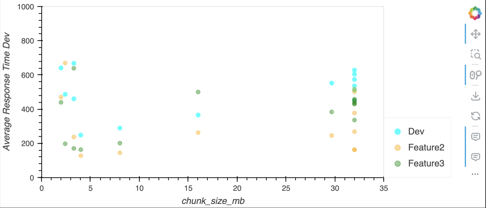

metadata_size_gb = 0.0005 # most costs are in GB
max_req_per_sec = 185
estimated_storage_metadata_only = 1
estimated_storage_files = 1200Caching strategies for titiler-xarray’s xarray.open_dataset
When creating image tiles from xarray datasets – whether they are zarr, virtual zarr or anything else xarray-readable – the 2 most expensive operations are reading opening the dataset with xarray, requiring multiple S3 or HTTPs requests (how many depends on the dataset) and reprojection. By caching the result of xarray.open_dataset, we hope to improve performance of the titiler-xarray API for all subsequent requests.
This document evaluates 3 options for caching:
- Diskcache using AWS Lambda ephemeral storage
- Fsspec’s filecache with AWS Elastic File System (EFS)
- Redis in-memory cache with AWS Elasticache
Estimating load + storage
We need to estimate load and storage in order to estimate costs.
Max load estimate
We estimate a max load of a throughput of 500kb for 185 req/s and 10GB storage for xarray metadata files.
Reasoning
- Metadata storage: Most xarray dataset objects stored in memcached are <1mb (~100kb). 500kb provides an upper limit. If we store 100 datasets that is only 0.5 GB.
- For fsspec’s cache, the system caches actual files. For this scenario, we estimate 1.2TB or 1200 GB of storage. Why 1.2TB? Because of the bursting throughput requirements of EFS.
- Max requests per second: GIBS max requests per day are about 16 million which is 185 req/s average (see https://www.earthdata.nasa.gov/eosdis/system-performance-and-metrics/esdis-metrics/esdis-weekly-metrics/esdis-weekly-metrics-october-9-2023)
# check max_reqmax_req_per_sec == max gibs req/s
max_daily_gibs_req = 16e6
assert(max_req_per_sec == round(max_daily_gibs_req/24/60/60))Baseline Costs - Lambda
Titiler-xarray runs on lambda. The associated costs will be for:
- run time (charged by gb/sec)
- number of requests
- ephemeral storage (also gb/sec)
seconds_per_month = 60 * 60 * 24 * 30
gb_second_cost_runtime = 0.0000166667 # Duration is calculated from the time your code begins executing until it returns or otherwise terminates, rounded up to the nearest 1 ms*. The price depends on the amount of memory you allocate to your function.
# All lambdas were set at the maximum memory (10GB)
memory_gb = 10
# and this cost would be associated with the execution time,
# so obviously faster execution is cheaper.
max_monthly_runtime_cost = gb_second_cost_runtime * memory_gb * seconds_per_month
print(f"Estimated monthly run time cost for lambda: ${round(max_monthly_runtime_cost, 2)}")Estimated monthly run time cost for lambda: $432.0cost_per_million_requests = 0.2
max_requests_per_month = max_daily_gibs_req * 30
max_monthly_requests_costs = cost_per_million_requests * max_requests_per_month/1e6
print(f"Estimated monthly requests cost for lambda: ${round(max_monthly_requests_costs, 2)}")Estimated monthly requests cost for lambda: $96.0gb_second_cost_storage = 0.0000000309
storage_gb = 10
max_monthly_storage_cost = gb_second_cost_storage * seconds_per_month * storage_gb
print(f"Estimated monthly storage cost for lambda: ${round(max_monthly_storage_cost, 2)}")Estimated monthly storage cost for lambda: $0.8total_max_monthly_lambda_cost = max_monthly_runtime_cost + max_monthly_requests_costs + max_monthly_storage_cost
print(f"Total max monthly cost: ${round(total_max_monthly_lambda_cost, 2)}")Total max monthly cost: $528.8NAT Gateway
For options 2 and 3, a NAT Gateway is required. In order to communicate with the internet, the lambda nees a public IP address. A NAT Gateway provides an IP address for services in a private subnet. The lambda and services it communicates with such as Elasticache and Elastic File System may exist in the same VPC and communicate within that network. But for the lambda to make requests outside of that network, it needs a NAT Gateway. More information is available from AWS: https://repost.aws/knowledge-center/internet-access-lambda-function.
hrs_per_month = 24 * 30
nat_gateway_cost_per_hour = 0.045
nat_gateway_run_cost = nat_gateway_cost_per_hour * hrs_per_month
print(f"Cost to run nat gateway per month: ${nat_gateway_run_cost}")Cost to run nat gateway per month: $32.4# Data Transfer OUT From Amazon EC2 To Internet is $0.09 per GB, see https://aws.amazon.com/ec2/pricing/on-demand/
# Below we find the maximum average content size is about 1400 bytes, 1.4e-6 GB
max_content_size_response_gb = 1.4e-6
gb_out_per_month = max_daily_gibs_req * 30 * max_content_size_response_gb
cost_per_gb_out = 0.09
cost_per_month = gb_out_per_month * cost_per_gb_out
print(f"Cost to transfer data out of nat gateway per month: ${cost_per_month}")Cost to transfer data out of nat gateway per month: $60.48Performance Results
Methodology
Results are presented from 4 deployments, those with the prefix feature each has a different caching method employed.
Note: results from feature 1 (diskcache and lambda ephemeral storage) are no longer reported as that stack was torn down.
- dev is the
devbranch and deployment, with no caching configured. - feature is diskcache + Lambda ephemeral storage, code: feat/diskcache
- feature2 is fsspec filecache + EFS, code: feat/fsspec-filecache
- feature3 is elasticache, code: feat/elasticache
The most notable changes are in infrastructure/cdk/app.py, where changes to cloud infrastructure were made, and titiler/xarray/reader.py where changes to application code handling to account for cache reading and writing was made.
Tests were run against either a set of external datasets or fake datasets. The external datasets are real-world scenarios including a kerchunk reference, a NetCDF file, 2 public zarr stores with consolidated metadata and one private zarr store with unconsolidated and chunked metadata (prod-giovanni-cache). The fake datasets represent variations in chunk size and number of spatial chunks.
Performance Results Summary
- Fsspec file cache has the fastest performance, however there are a number of issues outstanding.
- Cannot support transposed coordinates, see: https://github.com/pydata/xarray/issues/8443 and https://github.com/corteva/rioxarray/issues/711
- Error using fsspec’s blockcache with reference file systems, see: https://github.com/fsspec/filesystem_spec/issues/1427
- Intermittent test failures which are difficult to reproduce,
attributeerror 'list' has no attribute 'update' - Cannot support unconsolidated metadata. This needs more data to back it up but results in testing were that using unconsolidated metadata with fsspec’s filecache was prohibitively slow.
- Diskcache and Elasticache performed roughly the same.
Tests were run numerous times and past results may be found in the notebooks in the history of Oct 22 - 25 of https://github.com/developmentseed/tile-benchmarking/blob/main/03-e2e/compare-dev-feature.ipynb
Performance testing
We used the locust library to run performance tests. The test methods and scripts are documented in the README.md in this directory.
Below, we run tests on the dev branch, deployed to dev-titiler-xarray.delta-backend.com which has no caching implemented.
import pandas as pd
import hvplot.pandas
import holoviews as hv
pd.options.plotting.backend = 'holoviews'
import os
import sys
import warnings
warnings.filterwarnings('ignore')
sys.path.append('..')
from helpers import dataframe
from helpers.eodc_hub_role import fetch_and_set_credentialscredentials = fetch_and_set_credentials()Download results from past tests
include_exclude_string = '--exclude "*" --include "*_urls_stats.csv"'%%capture
!rm -rf downloaded_*_results
!aws s3 cp --recursive s3://nasa-eodc-data-store/tile-benchmarking-results/dev_2023-11-14_16-48-09/ downloaded_dev_results/ {include_exclude_string}
!aws s3 cp --recursive s3://nasa-eodc-data-store/tile-benchmarking-results/feature2_2023-11-14_16-49-09/ downloaded_feature2_results/ {include_exclude_string}
!aws s3 cp --recursive s3://nasa-eodc-data-store/tile-benchmarking-results/feature3_2023-11-14_16-49-56/ downloaded_feature3_results/ {include_exclude_string}
!aws s3 cp --recursive s3://nasa-eodc-data-store/tile-benchmarking-results/dev_2023-11-14_01-54-47/ downloaded_dev_results/ {include_exclude_string}
!aws s3 cp --recursive s3://nasa-eodc-data-store/tile-benchmarking-results/feature2_2023-11-14_01-56-23/ downloaded_feature2_results/ {include_exclude_string}
!aws s3 cp --recursive s3://nasa-eodc-data-store/tile-benchmarking-results/feature3_2023-11-14_01-59-35/ downloaded_feature3_results/ {include_exclude_string} results = { 'feature3': {}, 'feature2': {}, 'dev': {} }
def read_results(env: str = "dev"):
# Specify the directory path and the suffix
directory_path = f"downloaded_{env}_results/"
suffix = "_urls_stats.csv" # For example, if you're interested in text files
# List all files in the directory
all_files = os.listdir(directory_path)
# Filter the files to only include those that end with the specified suffix
files_with_suffix = [f"{directory_path}{f}" for f in all_files if f.endswith(suffix)]
dfs = []
for file in files_with_suffix:
df = pd.read_csv(file)
df['file'] = file
dfs.append(df)
merged_df = pd.concat(dfs)
merged_df['dataset'] = [file.split('/')[1].replace('_urls_stats.csv', '') for file in merged_df['file']]
results[env]['all'] = merged_df
# The "Aggregated" results represent aggregations across tile endpoints.
results[env][f'Aggregated {env}'] = merged_df[merged_df['Name'] == 'Aggregated']
return resultsread_results()['dev']['Aggregated dev'].drop(columns=['Type', 'Name', 'file'])| Request Count | Failure Count | Median Response Time | Average Response Time | Min Response Time | Max Response Time | Average Content Size | Requests/s | Failures/s | 50% | ... | 75% | 80% | 90% | 95% | 98% | 99% | 99.9% | 99.99% | 100% | dataset | |
|---|---|---|---|---|---|---|---|---|---|---|---|---|---|---|---|---|---|---|---|---|---|
| 10 | 49 | 0 | 1500.633718 | 1596.383736 | 1500.633718 | 3272.885588 | 693.000000 | 1.601609 | 0.0000 | 1500 | ... | 1600 | 1600 | 1700 | 1900 | 3300 | 3300 | 3300 | 3300 | 3300 | single_chunk_store_lat2896_lon5792.zarr |
| 10 | 38 | 38 | 53.000000 | 524.284276 | 42.417900 | 6673.102189 | 25.000000 | 4.695300 | 4.6953 | 53 | ... | 60 | 64 | 75 | 5700 | 6700 | 6700 | 6700 | 6700 | 6700 | GLDAS_NOAH025_3H.A20230731.2100.021.nc4 |
| 10 | 48 | 0 | 500.000000 | 628.821530 | 396.882611 | 1213.952883 | 693.000000 | 4.054097 | 0.0000 | 510 | ... | 850 | 880 | 1000 | 1000 | 1200 | 1200 | 1200 | 1200 | 1200 | with_chunks_store_lat4096_lon8192.zarr |
| 10 | 50 | 0 | 500.000000 | 536.867885 | 474.096250 | 1396.353657 | 693.000000 | 4.509760 | 0.0000 | 500 | ... | 540 | 570 | 590 | 620 | 1400 | 1400 | 1400 | 1400 | 1400 | single_chunk_store_lat1448_lon2896.zarr |
| 10 | 48 | 0 | 510.000000 | 605.234564 | 481.747613 | 1108.441272 | 693.000000 | 4.100467 | 0.0000 | 510 | ... | 680 | 740 | 920 | 950 | 1100 | 1100 | 1100 | 1100 | 1100 | with_chunks_store_lat5793_lon11586.zarr |
| 10 | 49 | 0 | 410.000000 | 502.021901 | 356.694920 | 1502.286019 | 564.122449 | 5.390409 | 0.0000 | 410 | ... | 470 | 490 | 620 | 1300 | 1500 | 1500 | 1500 | 1500 | 1500 | pr_day_ACCESS-CM2_historical_r1i1p1f1_gn_1950.nc |
| 10 | 49 | 0 | 470.000000 | 500.867121 | 368.176257 | 818.903173 | 1269.367347 | 4.847808 | 0.0000 | 470 | ... | 570 | 600 | 660 | 750 | 820 | 820 | 820 | 820 | 820 | power_901_monthly_meteorology_utc.zarr |
| 10 | 48 | 0 | 480.000000 | 452.211805 | 299.544852 | 1015.821791 | 693.000000 | 5.530121 | 0.0000 | 480 | ... | 490 | 500 | 660 | 670 | 1000 | 1000 | 1000 | 1000 | 1000 | with_chunks_store_lat2048_lon4096.zarr |
| 10 | 47 | 0 | 440.000000 | 707.536122 | 381.051111 | 3156.716407 | 753.148936 | 4.297676 | 0.0000 | 440 | ... | 490 | 520 | 2800 | 2900 | 3200 | 3200 | 3200 | 3200 | 3200 | aws-noaa-oisst-feedstock_reference |
| 10 | 43 | 0 | 270.000000 | 290.079964 | 243.758127 | 701.968978 | 693.000000 | 8.779802 | 0.0000 | 270 | ... | 300 | 310 | 330 | 350 | 700 | 700 | 700 | 700 | 700 | single_chunk_store_lat724_lon1448.zarr |
| 10 | 49 | 0 | 860.000000 | 923.363868 | 831.860632 | 2541.271207 | 693.000000 | 2.731068 | 0.0000 | 860 | ... | 880 | 910 | 1000 | 1100 | 2500 | 2500 | 2500 | 2500 | 2500 | single_chunk_store_lat2048_lon4096.zarr |
| 10 | 48 | 0 | 490.000000 | 574.316695 | 473.564420 | 1345.726702 | 693.000000 | 4.359196 | 0.0000 | 490 | ... | 510 | 670 | 930 | 1100 | 1300 | 1300 | 1300 | 1300 | 1300 | with_chunks_store_lat2896_lon5792.zarr |
| 10 | 48 | 0 | 350.000000 | 366.257629 | 322.482096 | 550.962291 | 693.000000 | 6.893276 | 0.0000 | 350 | ... | 370 | 370 | 450 | 490 | 550 | 550 | 550 | 550 | 550 | single_chunk_store_lat1024_lon2048.zarr |
| 10 | 48 | 0 | 540.000000 | 586.160854 | 498.679653 | 1225.129486 | 694.000000 | 4.438618 | 0.0000 | 540 | ... | 600 | 610 | 760 | 860 | 1200 | 1200 | 1200 | 1200 | 1200 | cmip6-pds_GISS-E2-1-G_historical_tas |
| 10 | 47 | 0 | 220.000000 | 249.047163 | 202.675028 | 693.798396 | 693.000000 | 9.360834 | 0.0000 | 220 | ... | 250 | 270 | 300 | 360 | 690 | 690 | 690 | 690 | 690 | single_chunk_store_lat512_lon1024.zarr |
| 10 | 48 | 0 | 490.000000 | 513.034740 | 470.702308 | 1109.377753 | 693.000000 | 4.970260 | 0.0000 | 490 | ... | 500 | 510 | 540 | 610 | 1100 | 1100 | 1100 | 1100 | 1100 | with_chunks_store_lat1448_lon2896.zarr |
| 10 | 50 | 0 | 3000.000000 | 3147.481403 | 2833.370031 | 6696.270661 | 693.000000 | 0.794920 | 0.0000 | 3000 | ... | 3100 | 3200 | 3300 | 4700 | 6700 | 6700 | 6700 | 6700 | 6700 | single_chunk_store_lat4096_lon8192.zarr |
17 rows × 21 columns
Option 1: Diskcache with ephemeral Lambda storage
The python diskcache library can be used to cache the result of an xarray open dataset function call on disk. It uses sqlite and has been shown to be faster than fsspec’s filecache in local tests (see https://github.com/developmentseed/tile-benchmarking/blob/main/02-run-tests/test-xarray-open-dataset.ipynb).
Code: feat/diskcache
Pros:
- Diskcache includes a memoize decorator that makes it simple to implement
- Seems relatively stable (e.g. no errors in load tests)
- We can set a storage limit so we should not exceed the ephemeral storage capacity.
Cons:
- While diskcache was faster fsspec in local testing, when deployed using AWS Elastic File System (EFS), the application failed after a few requests (disk IO error. This was not surprising because SQLite is not recommended for use with Network File System (NFS) mounts.
- You can use diskcache with Lambda’s ephemeral storage, but anything stored will be lost whenever the execution environmentrestarts. This still may be a desirable option.
Option 1 Performance tests
# read_results('feature')['feature']['Aggregated feature'].drop(columns=['Type', 'Name', 'file'])Option 2: Fsspec’s filecache with EFS
Fsspec offers a filecache option.
Pros: * Data is persisted across lambda container restarts. * Not sure we need this yet, but servers can share EFS mounts.
Cons/Caveats: * EFS can be expensive * Code is complicated * You must use a VPC: “EFS file systems are always created within a customer VPC, so Lambda functions using the EFS file system must all reside in the same VPC.” from https://aws.amazon.com/blogs/compute/using-amazon-efs-for-aws-lambda-in-your-serverless-applications/ * Throughput configuration is complicated and ensuring we don’t surpass our throughput rate may be challenging. When EFS is configured with the “bursting” throughput option, the throughput “base” rate is determined by data stored in EFS and accrues “burst credits” whenever the throughput is lower than the base rate. The first time performance tests were run for fake datasets, there was a small but noticeable error rate (see https://github.com/developmentseed/tile-benchmarking/blob/25982c8e44c3e794399007e72c2170d10b2cdc23/03-e2e/compare-dev-feature.ipynb). The AWS EFS documentation states:
Burst credits accrue when the file system consumes below its base throughput rate, and are deducted when throughput exceeds the base rate.
I think when tests were first executed, perhaps we reached the throughput limit but then they accrued while the system was not being used and when tests were run the following day there were 0 errors.
- There is less success when evaluating performance against “real world” datasets.
- The NetCDF and power_901_monthly_meteorology_utc.zarr had worse (in the case of NetCDF, much worse and worse than with no cache) performance. The reason why requires more investigation.
- The unconsolidated data store from prod-giovanni-cache (which also has chunked coordinate data) times out. The diskcache option worked much better for this case, but only this case.
Additional Costs
https://aws.amazon.com/efs/pricing/
From metrics during tests, the maximum read was 1 million bytes, or 1MB. If there are 185 req / second and each request reads 1mb of data, we need a throughput of 185mb/s. The base rate for bursting througput is 50kb/s for writes and 150kb/s for reads for every 1GB of data (see https://docs.aws.amazon.com/efs/latest/ug/performance.html#bursting).
So we need storage for througput of 185000kb/s which is 1.2TB?!
cost_per_gb_month_storage = 0.30
required_storage_for_throughput = 1233 # 1.2TB required to have a throughput of 185 mb/s
print(f"Upper bound for estimated storage costs: ${required_storage_for_throughput * cost_per_gb_month_storage}")Upper bound for estimated storage costs: $369.9per_gb_read_cost = 0.03
max_read_size_gb = 0.001 # taken from maximum value of DataReadIOBytes metric from running tests
# Assuming the same peak requests as GIBS, which is truly an upper threshold, this would be $14,400 😱a month
cost_per_month_for_reads = max_daily_gibs_req * max_read_size_gb * per_gb_read_cost * 30
print(f"Estimated cost for data transfer ${cost_per_month_for_reads}")Estimated cost for data transfer $14400.0Option 2 Performance tests
read_results('feature2')['feature2']['Aggregated feature2'].drop(columns=['Type', 'Name', 'file'])| Request Count | Failure Count | Median Response Time | Average Response Time | Min Response Time | Max Response Time | Average Content Size | Requests/s | Failures/s | 50% | ... | 75% | 80% | 90% | 95% | 98% | 99% | 99.9% | 99.99% | 100% | dataset | |
|---|---|---|---|---|---|---|---|---|---|---|---|---|---|---|---|---|---|---|---|---|---|
| 10 | 48 | 0 | 280.0 | 395.685591 | 253.769724 | 1868.435398 | 693.000000 | 6.805451 | 0.0 | 280 | ... | 290 | 290 | 310 | 1700 | 1900 | 1900 | 1900 | 1900 | 1900 | single_chunk_store_lat2896_lon5792.zarr |
| 10 | 49 | 0 | 790.0 | 1276.058463 | 735.600991 | 7829.914880 | 505.489796 | 2.178323 | 0.0 | 790 | ... | 870 | 880 | 960 | 6200 | 7800 | 7800 | 7800 | 7800 | 7800 | GLDAS_NOAH025_3H.A20230731.2100.021.nc4 |
| 10 | 47 | 0 | 380.0 | 501.937470 | 134.356084 | 1686.041705 | 693.000000 | 6.041468 | 0.0 | 380 | ... | 520 | 530 | 1500 | 1600 | 1700 | 1700 | 1700 | 1700 | 1700 | with_chunks_store_lat4096_lon8192.zarr |
| 10 | 49 | 0 | 140.0 | 163.719092 | 124.108099 | 575.527993 | 693.000000 | 12.169779 | 0.0 | 140 | ... | 140 | 150 | 170 | 460 | 580 | 580 | 580 | 580 | 580 | single_chunk_store_lat1448_lon2896.zarr |
| 10 | 49 | 0 | 410.0 | 517.463312 | 126.392911 | 2733.153264 | 683.061224 | 5.392833 | 0.0 | 410 | ... | 500 | 570 | 1600 | 1600 | 2700 | 2700 | 2700 | 2700 | 2700 | with_chunks_store_lat5793_lon11586.zarr |
| 10 | 48 | 0 | 210.0 | 232.858913 | 184.725357 | 804.352674 | 560.895833 | 9.838989 | 0.0 | 210 | ... | 230 | 240 | 310 | 320 | 800 | 800 | 800 | 800 | 800 | pr_day_ACCESS-CM2_historical_r1i1p1f1_gn_1950.nc |
| 10 | 47 | 0 | 330.0 | 378.581222 | 220.706650 | 1479.084163 | 1290.127660 | 6.664998 | 0.0 | 330 | ... | 390 | 410 | 550 | 620 | 1500 | 1500 | 1500 | 1500 | 1500 | power_901_monthly_meteorology_utc.zarr |
| 10 | 36 | 0 | 140.0 | 268.911446 | 124.836974 | 1088.865918 | 693.000000 | 8.930055 | 0.0 | 150 | ... | 320 | 350 | 440 | 1000 | 1100 | 1100 | 1100 | 1100 | 1100 | with_chunks_store_lat2048_lon4096.zarr |
| 10 | 46 | 0 | 300.0 | 454.779957 | 215.951635 | 2554.828333 | 754.413043 | 6.535851 | 0.0 | 300 | ... | 330 | 330 | 390 | 2200 | 2600 | 2600 | 2600 | 2600 | 2600 | aws-noaa-oisst-feedstock_reference |
| 10 | 40 | 0 | 120.0 | 145.397714 | 113.584036 | 492.002583 | 693.000000 | 13.274772 | 0.0 | 120 | ... | 130 | 130 | 230 | 280 | 490 | 490 | 490 | 490 | 490 | single_chunk_store_lat724_lon1448.zarr |
| 10 | 46 | 0 | 200.0 | 265.304951 | 180.081490 | 1015.755097 | 693.000000 | 9.047933 | 0.0 | 200 | ... | 210 | 210 | 290 | 910 | 1000 | 1000 | 1000 | 1000 | 1000 | single_chunk_store_lat2048_lon4096.zarr |
| 10 | 49 | 0 | 150.0 | 378.283140 | 122.307844 | 1578.330298 | 683.061224 | 6.997816 | 0.0 | 150 | ... | 450 | 470 | 1300 | 1400 | 1600 | 1600 | 1600 | 1600 | 1600 | with_chunks_store_lat2896_lon5792.zarr |
| 10 | 49 | 0 | 140.0 | 263.579785 | 116.896388 | 5832.494223 | 693.000000 | 5.393365 | 0.0 | 140 | ... | 140 | 150 | 180 | 320 | 5800 | 5800 | 5800 | 5800 | 5800 | single_chunk_store_lat1024_lon2048.zarr |
| 10 | 49 | 0 | 200.0 | 234.491871 | 159.094610 | 755.066806 | 694.000000 | 9.780023 | 0.0 | 200 | ... | 220 | 220 | 450 | 540 | 760 | 760 | 760 | 760 | 760 | cmip6-pds_GISS-E2-1-G_historical_tas |
| 10 | 42 | 0 | 120.0 | 128.626964 | 109.272853 | 255.222493 | 693.000000 | 14.165349 | 0.0 | 120 | ... | 120 | 120 | 130 | 210 | 260 | 260 | 260 | 260 | 260 | single_chunk_store_lat512_lon1024.zarr |
| 10 | 49 | 0 | 140.0 | 163.106024 | 125.356832 | 551.177199 | 693.000000 | 12.487576 | 0.0 | 140 | ... | 150 | 160 | 160 | 440 | 550 | 550 | 550 | 550 | 550 | with_chunks_store_lat1448_lon2896.zarr |
| 10 | 49 | 0 | 420.0 | 632.604828 | 398.103091 | 3299.987020 | 693.000000 | 4.535112 | 0.0 | 420 | ... | 440 | 450 | 460 | 2900 | 3300 | 3300 | 3300 | 3300 | 3300 | single_chunk_store_lat4096_lon8192.zarr |
17 rows × 21 columns
Option 3: Elasticache
AWS Elasticache is a managed in-memory data store which we can use with Redis or memcached. https://aws.amazon.com/elasticache/pricing/.
Pros: * Stable, relatively cheap
Cons: * Not as fast as fsspec filecache efs
Note: Performance did not seem significantly different when using a cache.m6g.xlarge instance: compare https://github.com/developmentseed/tile-benchmarking/blob/ea9fc4fd0f5604fe8d1e0862ea75978a741d1d7e/03-e2e/compare-dev-feature.ipynb (xlarge instance) with https://github.com/developmentseed/tile-benchmarking/blob/18f90c0508733994709378a3d7fe5de2c84f34d7/03-e2e/compare-dev-feature.ipynb (cache.t3.small instance)
Additional cost to baseline
cost_per_hour = 0.034 # cache.t3.small
hours_per_month = 24 * 30
print(f"cost per month for cache.t3.small: ${cost_per_hour * hours_per_month}")cost per month for cache.t3.small: $24.48read_results('feature3')['feature3']['Aggregated feature3'].drop(columns=['Type', 'Name', 'file'])| Request Count | Failure Count | Median Response Time | Average Response Time | Min Response Time | Max Response Time | Average Content Size | Requests/s | Failures/s | 50% | ... | 75% | 80% | 90% | 95% | 98% | 99% | 99.9% | 99.99% | 100% | dataset | |
|---|---|---|---|---|---|---|---|---|---|---|---|---|---|---|---|---|---|---|---|---|---|
| 10 | 49 | 0 | 1500.0 | 1482.102111 | 1446.060448 | 1701.976069 | 693.00000 | 1.718222 | 0.0 | 1500 | ... | 1500 | 1500 | 1600 | 1600 | 1700 | 1700 | 1700 | 1700 | 1700 | single_chunk_store_lat2896_lon5792.zarr |
| 10 | 50 | 0 | 180.0 | 630.331648 | 152.363652 | 6419.123439 | 499.50000 | 4.942701 | 0.0 | 180 | ... | 190 | 190 | 220 | 5600 | 6400 | 6400 | 6400 | 6400 | 6400 | GLDAS_NOAH025_3H.A20230731.2100.021.nc4 |
| 10 | 49 | 0 | 420.0 | 432.473089 | 328.955163 | 719.129293 | 693.00000 | 5.583208 | 0.0 | 420 | ... | 440 | 460 | 540 | 590 | 720 | 720 | 720 | 720 | 720 | with_chunks_store_lat4096_lon8192.zarr |
| 10 | 48 | 0 | 430.0 | 458.847994 | 416.973008 | 1013.352666 | 693.00000 | 6.003901 | 0.0 | 430 | ... | 440 | 450 | 540 | 590 | 1000 | 1000 | 1000 | 1000 | 1000 | single_chunk_store_lat1448_lon2896.zarr |
| 10 | 49 | 0 | 430.0 | 453.521440 | 418.372858 | 757.733955 | 693.00000 | 5.447417 | 0.0 | 430 | ... | 440 | 470 | 520 | 610 | 760 | 760 | 760 | 760 | 760 | with_chunks_store_lat5793_lon11586.zarr |
| 10 | 47 | 0 | 130.0 | 192.310381 | 123.789939 | 979.602566 | 558.06383 | 11.740863 | 0.0 | 130 | ... | 140 | 140 | 170 | 720 | 980 | 980 | 980 | 980 | 980 | pr_day_ACCESS-CM2_historical_r1i1p1f1_gn_1950.nc |
| 10 | 48 | 0 | 170.0 | 217.904095 | 143.813387 | 477.569934 | 1281.12500 | 9.960955 | 0.0 | 180 | ... | 240 | 310 | 360 | 410 | 480 | 480 | 480 | 480 | 480 | power_901_monthly_meteorology_utc.zarr |
| 10 | 47 | 0 | 300.0 | 336.982501 | 243.192312 | 441.587479 | 693.00000 | 7.800566 | 0.0 | 300 | ... | 420 | 420 | 430 | 430 | 440 | 440 | 440 | 440 | 440 | with_chunks_store_lat2048_lon4096.zarr |
| 10 | 45 | 0 | 250.0 | 460.284923 | 222.468733 | 2525.695090 | 754.60000 | 6.441500 | 0.0 | 250 | ... | 320 | 330 | 420 | 2500 | 2500 | 2500 | 2500 | 2500 | 2500 | aws-noaa-oisst-feedstock_reference |
| 10 | 43 | 0 | 190.0 | 201.859149 | 182.756027 | 387.341882 | 693.00000 | 10.737522 | 0.0 | 190 | ... | 200 | 200 | 230 | 240 | 390 | 390 | 390 | 390 | 390 | single_chunk_store_lat724_lon1448.zarr |
| 10 | 49 | 0 | 780.0 | 805.849507 | 777.187189 | 1184.107590 | 693.00000 | 3.167854 | 0.0 | 780 | ... | 790 | 800 | 900 | 920 | 1200 | 1200 | 1200 | 1200 | 1200 | single_chunk_store_lat2048_lon4096.zarr |
| 10 | 48 | 0 | 430.0 | 442.358223 | 416.175806 | 555.998044 | 693.00000 | 5.971648 | 0.0 | 430 | ... | 440 | 460 | 510 | 540 | 560 | 560 | 560 | 560 | 560 | with_chunks_store_lat2896_lon5792.zarr |
| 10 | 48 | 0 | 270.0 | 500.940764 | 265.511467 | 6059.966350 | 693.00000 | 4.808359 | 0.0 | 270 | ... | 280 | 280 | 330 | 530 | 6100 | 6100 | 6100 | 6100 | 6100 | single_chunk_store_lat1024_lon2048.zarr |
| 10 | 48 | 0 | 360.0 | 384.546262 | 351.151335 | 611.575099 | 694.00000 | 6.843120 | 0.0 | 360 | ... | 390 | 400 | 450 | 500 | 610 | 610 | 610 | 610 | 610 | cmip6-pds_GISS-E2-1-G_historical_tas |
| 10 | 48 | 0 | 160.0 | 163.866330 | 145.595558 | 257.676171 | 693.00000 | 12.227905 | 0.0 | 160 | ... | 170 | 170 | 190 | 200 | 260 | 260 | 260 | 260 | 260 | single_chunk_store_lat512_lon1024.zarr |
| 10 | 48 | 0 | 420.0 | 431.186270 | 414.955985 | 537.070872 | 693.00000 | 6.204350 | 0.0 | 420 | ... | 430 | 430 | 470 | 480 | 540 | 540 | 540 | 540 | 540 | with_chunks_store_lat1448_lon2896.zarr |
| 10 | 49 | 0 | 3000.0 | 2955.143618 | 2776.319436 | 3260.587183 | 693.00000 | 0.872144 | 0.0 | 3000 | ... | 3100 | 3100 | 3200 | 3200 | 3300 | 3300 | 3300 | 3300 | 3300 | single_chunk_store_lat4096_lon8192.zarr |
17 rows × 21 columns
Plot results together
dev_df = results['dev'][f'Aggregated dev']
feature2_df = results['feature2'][f'Aggregated feature2']
feature3_df = results['feature3'][f'Aggregated feature3']
feature3_df.columns = ['dataset' if col == 'dataset' else col + ' Feature3' for col in feature3_df.columns]
merged_df = pd.merge(dev_df, feature2_df, on='dataset', suffixes=(' Dev', ' Feature2'))
merged_df = pd.merge(merged_df, feature3_df, on='dataset', how='outer')merged_df.head()| Type Dev | Name Dev | Request Count Dev | Failure Count Dev | Median Response Time Dev | Average Response Time Dev | Min Response Time Dev | Max Response Time Dev | Average Content Size Dev | Requests/s Dev | ... | 75% Feature3 | 80% Feature3 | 90% Feature3 | 95% Feature3 | 98% Feature3 | 99% Feature3 | 99.9% Feature3 | 99.99% Feature3 | 100% Feature3 | file Feature3 | |
|---|---|---|---|---|---|---|---|---|---|---|---|---|---|---|---|---|---|---|---|---|---|
| 0 | NaN | Aggregated | 49 | 0 | 1500.633718 | 1596.383736 | 1500.633718 | 3272.885588 | 693.0 | 1.601609 | ... | 1500 | 1500 | 1600 | 1600 | 1700 | 1700 | 1700 | 1700 | 1700 | downloaded_feature3_results/single_chunk_store... |
| 1 | NaN | Aggregated | 38 | 38 | 53.000000 | 524.284276 | 42.417900 | 6673.102189 | 25.0 | 4.695300 | ... | 190 | 190 | 220 | 5600 | 6400 | 6400 | 6400 | 6400 | 6400 | downloaded_feature3_results/GLDAS_NOAH025_3H.A... |
| 2 | NaN | Aggregated | 48 | 0 | 500.000000 | 628.821530 | 396.882611 | 1213.952883 | 693.0 | 4.054097 | ... | 440 | 460 | 540 | 590 | 720 | 720 | 720 | 720 | 720 | downloaded_feature3_results/with_chunks_store_... |
| 3 | NaN | Aggregated | 50 | 0 | 500.000000 | 536.867885 | 474.096250 | 1396.353657 | 693.0 | 4.509760 | ... | 440 | 450 | 540 | 590 | 1000 | 1000 | 1000 | 1000 | 1000 | downloaded_feature3_results/single_chunk_store... |
| 4 | NaN | Aggregated | 48 | 0 | 510.000000 | 605.234564 | 481.747613 | 1108.441272 | 693.0 | 4.100467 | ... | 440 | 470 | 520 | 610 | 760 | 760 | 760 | 760 | 760 | downloaded_feature3_results/with_chunks_store_... |
5 rows × 70 columns
dataset_specs_external = dataframe.csv_to_pandas('zarr_info.csv')
dataset_specs_fake = dataframe.csv_to_pandas('https://raw.githubusercontent.com/developmentseed/tile-benchmarking/18f90c0508733994709378a3d7fe5de2c84f34d7/03-e2e/zarr_info.csv')
dataset_specs_all = pd.concat([dataset_specs_external, dataset_specs_fake])dataset_specs_all.loc[dataset_specs_all['collection_name'] == 'GLDAS_NOAH025_3H.A20230731.2100.021.nc4', 'chunk_size_mb'] = 3.29
dataset_specs_all.loc[dataset_specs_all['collection_name'] == 'pr_day_ACCESS-CM2_historical_r1i1p1f1_gn_1950.nc', 'chunk_size_mb'] = 3.29merged_df['Failure Rate Dev'] = merged_df['Failure Count Dev']/merged_df['Request Count Dev'] * 100
merged_df['Failure Rate Feature2'] = merged_df['Failure Count Feature2']/merged_df['Request Count Feature2'] * 100
merged_df['Failure Rate Feature3'] = merged_df['Failure Count Feature3']/merged_df['Request Count Feature3'] * 100
summary_df = merged_df[
[
'Average Response Time Dev', 'Failure Rate Dev',
'Average Response Time Feature2', 'Failure Rate Feature2',
'Average Response Time Feature3', 'Failure Rate Feature3',
'dataset'
]
].sort_values('Average Response Time Dev')
merged_specs = summary_df.merge(dataset_specs_all, left_on='dataset', right_on='collection_name')
merged_specs| Average Response Time Dev | Failure Rate Dev | Average Response Time Feature2 | Failure Rate Feature2 | Average Response Time Feature3 | Failure Rate Feature3 | dataset | collection_name | source | chunks | shape_dict | dtype | chunk_size_mb | compression | number_of_spatial_chunks | number_coordinate_chunks | |
|---|---|---|---|---|---|---|---|---|---|---|---|---|---|---|---|---|
| 0 | 249.047163 | 0.0 | 128.626964 | 0.0 | 163.866330 | 0.0 | single_chunk_store_lat512_lon1024.zarr | single_chunk_store_lat512_lon1024.zarr | s3://nasa-eodc-data-store/test-data/fake-data/... | {'y': 1, 'x': 512} | {'y': 512, 'x': 1024} | float64 | 4.000000 | Blosc(cname='lz4', clevel=5, shuffle=SHUFFLE, ... | 1.024000e+03 | 2.0 |
| 1 | 290.079964 | 0.0 | 145.397714 | 0.0 | 201.859149 | 0.0 | single_chunk_store_lat724_lon1448.zarr | single_chunk_store_lat724_lon1448.zarr | s3://nasa-eodc-data-store/test-data/fake-data/... | {'y': 1, 'x': 724} | {'y': 724, 'x': 1448} | float64 | 7.998291 | Blosc(cname='lz4', clevel=5, shuffle=SHUFFLE, ... | 1.448000e+03 | 2.0 |
| 2 | 366.257629 | 0.0 | 263.579785 | 0.0 | 500.940764 | 0.0 | single_chunk_store_lat1024_lon2048.zarr | single_chunk_store_lat1024_lon2048.zarr | s3://nasa-eodc-data-store/test-data/fake-data/... | {'y': 1, 'x': 1024} | {'y': 1024, 'x': 2048} | float64 | 16.000000 | Blosc(cname='lz4', clevel=5, shuffle=SHUFFLE, ... | 2.048000e+03 | 2.0 |
| 3 | 452.211805 | 0.0 | 268.911446 | 0.0 | 336.982501 | 0.0 | with_chunks_store_lat2048_lon4096.zarr | with_chunks_store_lat2048_lon4096.zarr | s3://nasa-eodc-data-store/test-data/fake-data/... | {'y': 1, 'x': 1448} | {'y': 2048, 'x': 4096} | float64 | 31.993164 | Blosc(cname='lz4', clevel=5, shuffle=SHUFFLE, ... | 5.793238e+03 | 2.0 |
| 4 | 500.867121 | 0.0 | 378.581222 | 0.0 | 217.904095 | 0.0 | power_901_monthly_meteorology_utc.zarr | power_901_monthly_meteorology_utc.zarr | s3://power-analysis-ready-datastore/power_901_... | {'y': 504, 'x': 25} | {'y': 361, 'x': 576} | float64 | 2.403259 | Blosc(cname='lz4', clevel=5, shuffle=SHUFFLE, ... | 1.650286e+01 | 2.0 |
| 5 | 502.021901 | 0.0 | 232.858913 | 0.0 | 192.310381 | 0.0 | pr_day_ACCESS-CM2_historical_r1i1p1f1_gn_1950.nc | pr_day_ACCESS-CM2_historical_r1i1p1f1_gn_1950.nc | https://nex-gddp-cmip6.s3-us-west-2.amazonaws.... | {'y': 'N', 'x': '/'} | {'y': 600, 'x': 1440} | float32 | 3.290000 | NaN | NaN | 0.0 |
| 6 | 513.034740 | 0.0 | 163.106024 | 0.0 | 431.186270 | 0.0 | with_chunks_store_lat1448_lon2896.zarr | with_chunks_store_lat1448_lon2896.zarr | s3://nasa-eodc-data-store/test-data/fake-data/... | {'y': 1, 'x': 1448} | {'y': 1448, 'x': 2896} | float64 | 31.993164 | Blosc(cname='lz4', clevel=5, shuffle=SHUFFLE, ... | 2.896000e+03 | 2.0 |
| 7 | 524.284276 | 100.0 | 1276.058463 | 0.0 | 630.331648 | 0.0 | GLDAS_NOAH025_3H.A20230731.2100.021.nc4 | GLDAS_NOAH025_3H.A20230731.2100.021.nc4 | s3://gesdisc-cumulus-prod-protected/GLDAS/GLDA... | NaN | NaN | NaN | 3.290000 | NaN | NaN | NaN |
| 8 | 536.867885 | 0.0 | 163.719092 | 0.0 | 458.847994 | 0.0 | single_chunk_store_lat1448_lon2896.zarr | single_chunk_store_lat1448_lon2896.zarr | s3://nasa-eodc-data-store/test-data/fake-data/... | {'y': 1, 'x': 1448} | {'y': 1448, 'x': 2896} | float64 | 31.993164 | Blosc(cname='lz4', clevel=5, shuffle=SHUFFLE, ... | 2.896000e+03 | 2.0 |
| 9 | 574.316695 | 0.0 | 378.283140 | 0.0 | 442.358223 | 0.0 | with_chunks_store_lat2896_lon5792.zarr | with_chunks_store_lat2896_lon5792.zarr | s3://nasa-eodc-data-store/test-data/fake-data/... | {'y': 1, 'x': 1448} | {'y': 2896, 'x': 5792} | float64 | 31.993164 | Blosc(cname='lz4', clevel=5, shuffle=SHUFFLE, ... | 1.158400e+04 | 2.0 |
| 10 | 586.160854 | 0.0 | 234.491871 | 0.0 | 384.546262 | 0.0 | cmip6-pds_GISS-E2-1-G_historical_tas | cmip6-pds_GISS-E2-1-G_historical_tas | s3://cmip6-pds/CMIP6/CMIP/NASA-GISS/GISS-E2-1-... | {'y': 600, 'x': 90} | {'y': 90, 'x': 144} | float32 | 29.663086 | Blosc(cname='lz4', clevel=5, shuffle=SHUFFLE, ... | 2.400000e-01 | 1.0 |
| 11 | 605.234564 | 0.0 | 517.463312 | 0.0 | 453.521440 | 0.0 | with_chunks_store_lat5793_lon11586.zarr | with_chunks_store_lat5793_lon11586.zarr | s3://nasa-eodc-data-store/test-data/fake-data/... | {'y': 1, 'x': 1448} | {'y': 5793, 'x': 11586} | float64 | 31.993164 | Blosc(cname='lz4', clevel=5, shuffle=SHUFFLE, ... | 4.635200e+04 | 2.0 |
| 12 | 628.821530 | 0.0 | 501.937470 | 0.0 | 432.473089 | 0.0 | with_chunks_store_lat4096_lon8192.zarr | with_chunks_store_lat4096_lon8192.zarr | s3://nasa-eodc-data-store/test-data/fake-data/... | {'y': 1, 'x': 1448} | {'y': 4096, 'x': 8192} | float64 | 31.993164 | Blosc(cname='lz4', clevel=5, shuffle=SHUFFLE, ... | 2.317295e+04 | 2.0 |
| 13 | 707.536122 | 0.0 | 454.779957 | 0.0 | 460.284923 | 0.0 | aws-noaa-oisst-feedstock_reference | aws-noaa-oisst-feedstock_reference | https://ncsa.osn.xsede.org/Pangeo/pangeo-forge... | {'y': 1, 'x': 1} | {'y': 720, 'x': 1440} | int16 | 1.977539 | Zlib(level=4) | 1.036800e+06 | 1.0 |
| 14 | 923.363868 | 0.0 | 265.304951 | 0.0 | 805.849507 | 0.0 | single_chunk_store_lat2048_lon4096.zarr | single_chunk_store_lat2048_lon4096.zarr | s3://nasa-eodc-data-store/test-data/fake-data/... | {'y': 1, 'x': 2048} | {'y': 2048, 'x': 4096} | float64 | 64.000000 | Blosc(cname='lz4', clevel=5, shuffle=SHUFFLE, ... | 4.096000e+03 | 2.0 |
| 15 | 1596.383736 | 0.0 | 395.685591 | 0.0 | 1482.102111 | 0.0 | single_chunk_store_lat2896_lon5792.zarr | single_chunk_store_lat2896_lon5792.zarr | s3://nasa-eodc-data-store/test-data/fake-data/... | {'y': 1, 'x': 2896} | {'y': 2896, 'x': 5792} | float64 | 127.972656 | Blosc(cname='lz4', clevel=5, shuffle=SHUFFLE, ... | 5.792000e+03 | 2.0 |
| 16 | 3147.481403 | 0.0 | 632.604828 | 0.0 | 2955.143618 | 0.0 | single_chunk_store_lat4096_lon8192.zarr | single_chunk_store_lat4096_lon8192.zarr | s3://nasa-eodc-data-store/test-data/fake-data/... | {'y': 1, 'x': 4096} | {'y': 4096, 'x': 8192} | float64 | 256.000000 | Blosc(cname='lz4', clevel=5, shuffle=SHUFFLE, ... | 8.192000e+03 | 2.0 |
ylim = (0, 1000)
xlim = (0, 35)
dev_line = merged_specs.sort_values('chunk_size_mb').hvplot.scatter(
x='chunk_size_mb', y='Average Response Time Dev', label='Dev', color='cyan',
xlim=xlim, ylim=ylim
)
feature2_line = merged_specs.sort_values('chunk_size_mb').hvplot.scatter(
x='chunk_size_mb', y='Average Response Time Feature2', label='Feature2', color='orange', alpha=0.4,
xlim=xlim, ylim=ylim
)
feature3_line = merged_specs.sort_values('chunk_size_mb').hvplot.scatter(
x='chunk_size_mb', y='Average Response Time Feature3', label='Feature3', color='green', alpha=0.4,
xlim=xlim, ylim=ylim
)
# Combine the two line plots
combined_plot = dev_line * feature2_line * feature3_line
combined_plot.opts(legend_position='right')
# Create box plots for each column and combine
cols = ['Average Response Time Dev', 'Average Response Time Feature2', 'Average Response Time Feature3']
df_melted = merged_df.melt(value_vars=cols)
# Create the box plot using the transformed data
plot = df_melted.hvplot.box(by='variable', y='value', rot=45, ylim=(0,1500))
plotAppendix: Getting chunk size from NetCDF datasets
import h5py
import numpy as np
import requests
remote_url = "https://nex-gddp-cmip6.s3-us-west-2.amazonaws.com/NEX-GDDP-CMIP6/ACCESS-CM2/historical/r1i1p1f1/pr/pr_day_ACCESS-CM2_historical_r1i1p1f1_gn_1950.nc"
local_filepath = remote_url.split('/')[-1]
response = requests.get(remote_url, stream=True)
response.raise_for_status()
with open(local_filepath, 'wb') as f:
for chunk in response.iter_content(chunk_size=8192):
f.write(chunk)
f = h5py.File(local_filepath, 'r')
np.prod(f['pr'].chunks) * f['pr'].dtype.itemsize / 1024 / 10243.2958984375!aws s3 ls s3://podaac-ops-cumulus-protected/
An error occurred (AccessDenied) when calling the ListObjectsV2 operation: Access Deniedimport s3fs
import xarray as xr
import json
# Requires credentials
# read external datasets
with open('../01-generate-datasets/external-datasets.json') as f:
external_datasets = json.loads(f.read())
filter_protected = list(filter(lambda x: x.get('extra_args', {}).get('protected', None) == True, external_datasets.values()))
s3_fs = s3fs.S3FileSystem()
for dataset in filter_protected:
s3url = dataset['dataset_url']
variable = dataset['variable']
ds = xr.open_dataset(s3_fs.open(s3url), engine='h5netcdf')
chunks = ds[variable].encoding['chunksizes']
chunksize = np.prod(chunks) * ds[variable].dtype.itemsize / 1024 / 1024
print(f"Chunk size for {s3url} variable {variable} is {chunksize}")[{'dataset_url': 's3://podaac-ops-cumulus-protected/MUR-JPL-L4-GLOB-v4.1/20231107090000-JPL-L4_GHRSST-SSTfnd-MUR-GLOB-v02.0-fv04.1.nc',
'variable': 'analysed_sst',
'extra_args': {'protected': True}},
{'dataset_url': 's3://gesdisc-cumulus-prod-protected/GLDAS/GLDAS_NOAH025_3H.2.1/2023/212/GLDAS_NOAH025_3H.A20230731.2100.021.nc4',
'variable': 'SoilMoi0_10cm_inst',
'extra_args': {'protected': True}},
{'dataset_url': 's3://gesdisc-cumulus-prod-protected/GPM_L3/GPM_3IMERGDF.07/2000/06/3B-DAY.MS.MRG.3IMERG.20000601-S000000-E235959.V07.nc4',
'variable': 'precipitation',
'extra_args': {'protected': True}},
{'dataset_url': 's3://gesdisc-cumulus-prod-protected/TRMM_L3/TRMM_3B42_Daily.7/1998/01/3B42_Daily.19980101.7.nc4',
'variable': 'precipitation',
'extra_args': {'protected': True}}]